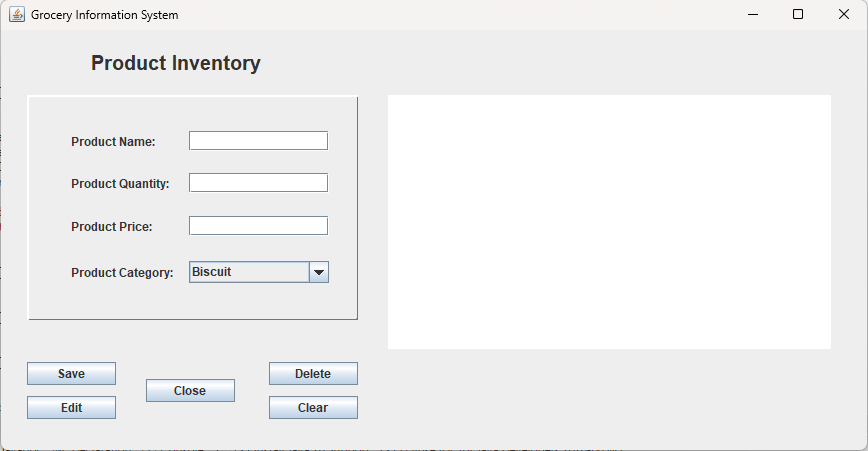

The Grocery Store Inventory System is a computerized application developed using Java to efficiently manage and monitor product stocks within a grocery store. It is designed to help store staff keep track of inventory levels, incoming deliveries, and sales transactions in real time.
